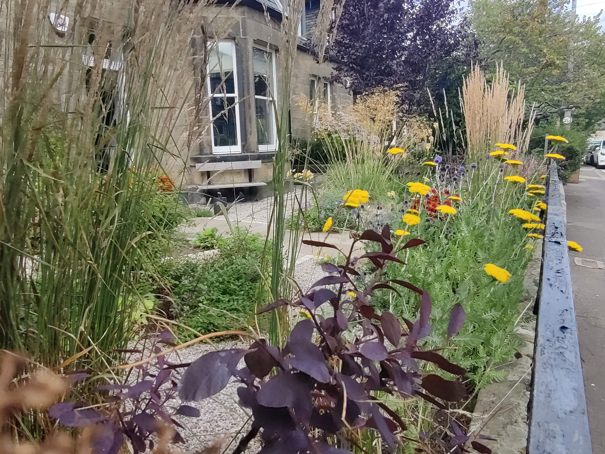
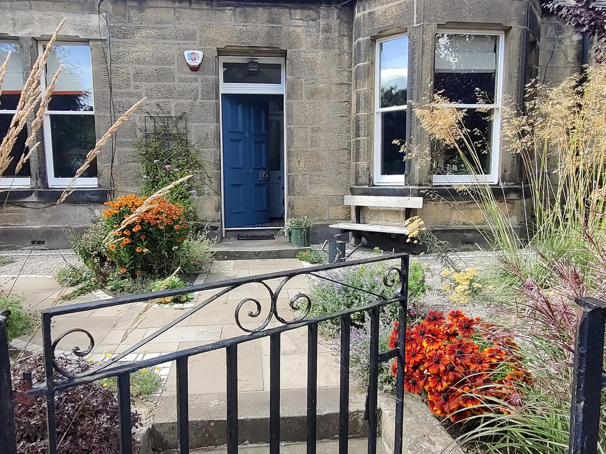

Front Garden - Edinburgh

Portobello Front Garden
This project was about the rejuvination of a front garden in the conservation area of Portobello. The garden was made up of lawn, mature shrubs and concrete paths with bins on view. The owner wanted to replace the paths, hide the bins and create a garden that gave doorstep appeal. As this garden is located in a conservation area planning permission was secured to make the changes.

Plant Rich Front Garden

Welcoming Space
 Garden in Autumn new path and binstore
Garden in Autumn new path and binstore
The concrete path was changed to riven sandstone and edged with cropped setts. The bins were relocated into a new bin store away from the front of the house and a purpose made bench was added at the front door.
Many of the shrubs were retained and relocated during the build. The muddy lawns were replaced with gravel planting, giving the garden more colour, texture and biodiversity.
The materials were selected to compliment the house and area with planting selected for its coastal location.
 Achillea and Eryngium – coastal planting
Achillea and Eryngium – coastal planting
“Anna made the whole process of changing our garden incredibly straightforward. She worked very collaboratively and creatively on the designs, taking the time to really understand our requirements before overseeing the landscapers and ensuring they delivered the work to a really high standard. Her choice of plants went way beyond anything we’d have done ourselves and look fantastic. Highest recommendation!”
 Echinops and Achillea
Echinops and Achillea
Site Before Starting
 Before - Muddy lawn with visible bins
Before - Muddy lawn with visible bins
 Digger during the build
Digger during the build